Overview
NONCANONICAL / ILLUSTRATIVE COST ONLY
- Run ID
- NONCANONICAL_CPU_INTEGRATION-20260828T205107Z
- Dataset mode
- sampled_10
- Query count
- 10
- Success count
- 10
- Failure count
- 0
- Success rate
- 100.00%
- Benchmark concurrency
- 2
- Duration
- N/A / telemetry unavailable for this run
- Model
- Qwen/Qwen3-0.6B
- Model revision
- N/A / telemetry unavailable for this run
- vLLM version
- 0.8.5
- dtype
- bfloat16
- max model length
- 4096
- max num seqs
- 32
- max batched tokens
- N/A / telemetry unavailable for this run
- GPU memory target
- N/A / telemetry unavailable for this run
- Prefix caching
- disabled
- Cost profile
- reference_cpu_demo:2026-08-28
- Machine hourly cost
- $1.000000
- Cost profile type
- synthetic/reference
Assignment Metrics
- Total run cost
- $0.037315
- Mean cost/query
- $0.003732
- Median cost/query
- $0.003181
- p95 cost/query
- $0.007026
- Queries per dollar
- 267.988
- Tokens per dollar
- 106,283.97
- Request cost sum
- $0.037315
Percentage of total cost by agent
| Agent | Share |
|---|---|
| AdvisorAgent | 45.00% |
| MetricsAgent | 15.74% |
| PriceAgent | 13.45% |
| RiskAgent | 5.81% |
| overhead_unallocated | 20.00% |
Request cost sum should match total run cost within floating-point tolerance. Failed attempts retain allocated infrastructure cost.
Cost
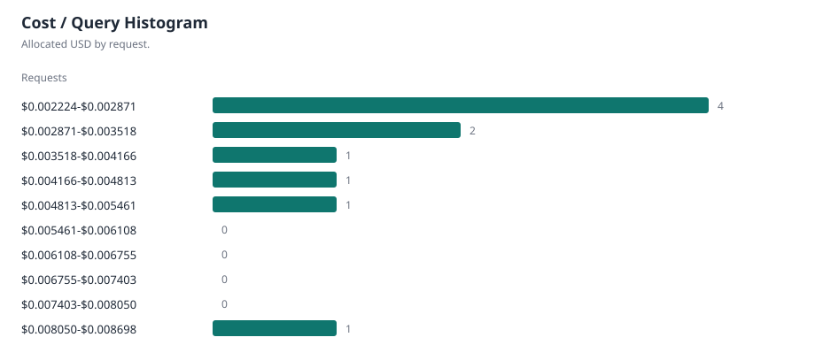
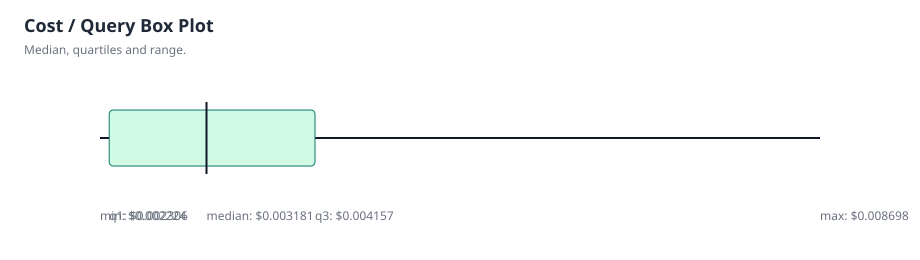
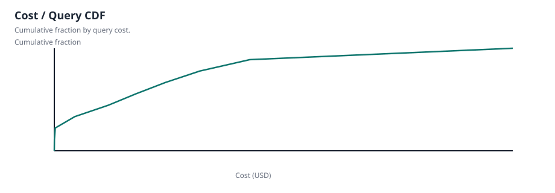
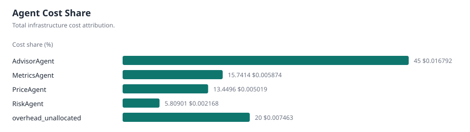
Performance
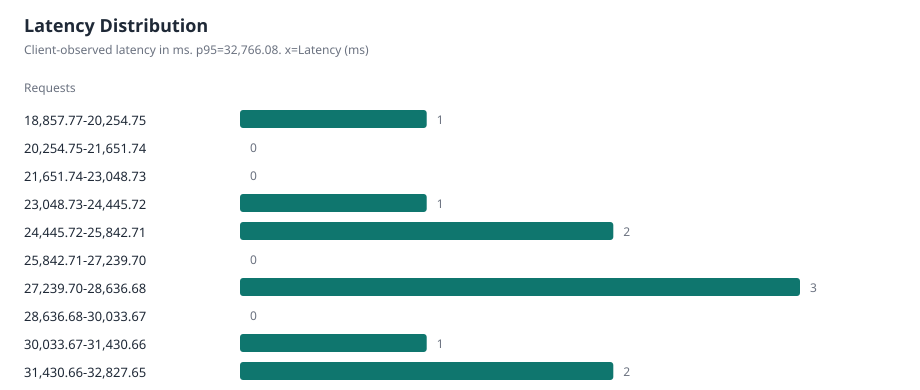
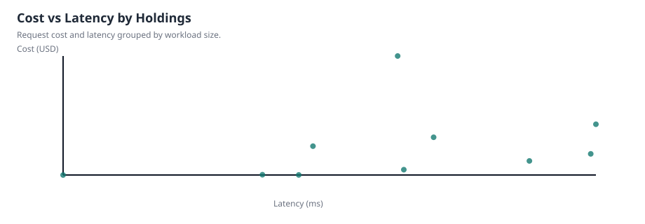
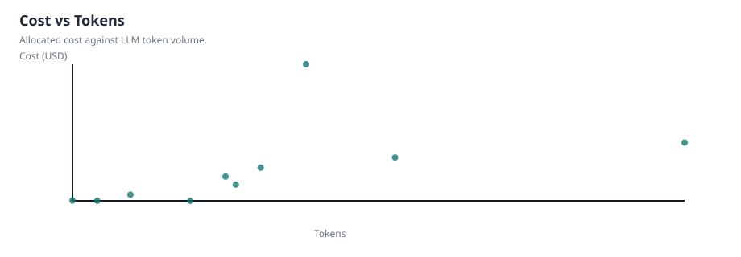
Agents & Tools
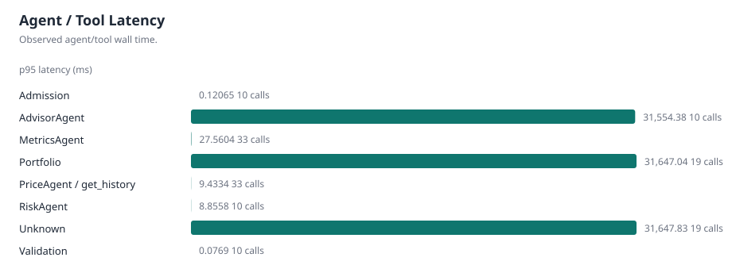
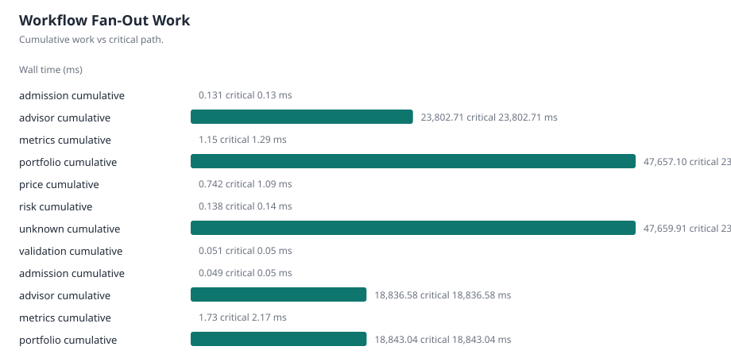
Inference & Serving
- Inference request count
- 10
- Total prompt tokens
- 2656
- Total completion tokens
- 1310
- Total tokens
- 3966
- Inference elapsed p50
- 26,477.89 ms
- Inference elapsed p95
- 31,553.21 ms
Aggregate vLLM telemetry
| Metric | Latest | Mean | Max | Source |
|---|---|---|---|---|
| Requests running | 2 requests | 1.55556 requests | 2 requests | gauge |
| Requests waiting | 0 requests | 0 requests | 0 requests | gauge |
| Prompt token throughput | 21.8533 tokens/s | 15.5124 tokens/s | 23.8845 tokens/s | rate |
| Generation token throughput | 8.86325 tokens/s | 6.93319 tokens/s | 10.4516 tokens/s | rate |
| Aggregate E2E p50 | 32,500.00 ms | 26,428.57 ms | 32,500.00 ms | run-level |
| Aggregate E2E p95 | 39,250.00 ms | 32,178.57 ms | 39,250.00 ms | run-level |
| Aggregate TTFT p50 | 4,375.00 ms | 4,583.33 ms | 6,250.00 ms | run-level |
| Aggregate TTFT p95 | 9,625.00 ms | 7,203.12 ms | 9,625.00 ms | run-level |
| Aggregate TPOT p50 | 128.872 ms | 130.667 ms | 159.091 ms | run-level |
| Aggregate TPOT p95 | 214.063 ms | 219.069 ms | 340 ms | run-level |
| Aggregate queue p95 | 285 ms | 285 ms | 285 ms | run-level |
| Aggregate prefill p95 | 9,625.00 ms | 7,482.14 ms | 9,625.00 ms | run-level |
| Aggregate decode p95 | 29,500.00 ms | 29,392.86 ms | 29,500.00 ms | run-level |
| KV-cache utilization | 3.16% | 2.78% | 4.27% | gauge |
| Preemptions | 0 count | 0 count | 0 count | increase |
| Prefix-cache hits | N/A / telemetry unavailable for this run | N/A / telemetry unavailable for this run | N/A / telemetry unavailable for this run | rate |
| Prefix-cache queries | N/A / telemetry unavailable for this run | N/A / telemetry unavailable for this run | N/A / telemetry unavailable for this run | rate |
GPU telemetry
| Metric | Latest | Mean | Max |
|---|---|---|---|
| GPU utilization | N/A / telemetry unavailable for this run | N/A / telemetry unavailable for this run | N/A / telemetry unavailable for this run |
| GPU memory used | N/A / telemetry unavailable for this run | N/A / telemetry unavailable for this run | N/A / telemetry unavailable for this run |
| GPU power | N/A / telemetry unavailable for this run | N/A / telemetry unavailable for this run | N/A / telemetry unavailable for this run |
| GPU temperature | N/A / telemetry unavailable for this run | N/A / telemetry unavailable for this run | N/A / telemetry unavailable for this run |
| GPU energy | N/A / telemetry unavailable for this run | N/A / telemetry unavailable for this run | N/A / telemetry unavailable for this run |
Exact per-request inference values come from inference spans. vLLM scheduler and histogram values are aggregate run-level Prometheus telemetry and are not assigned to individual requests.
Workload
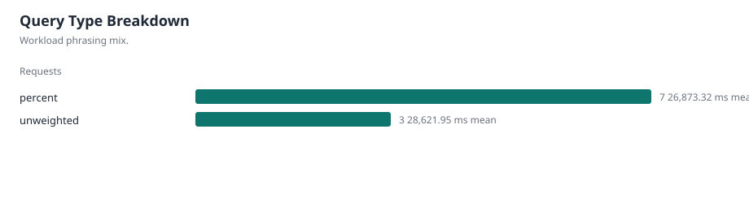
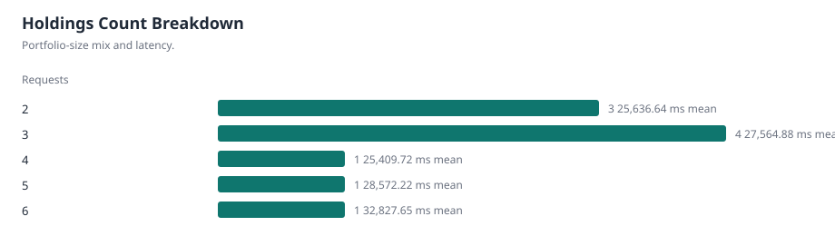
Request Drilldown
| Query ID | Request ID | Holdings | Type | Latency | Prompt tokens | Completion tokens | Cost | Success |
|---|---|---|---|---|---|---|---|---|
| 519 | NONCANONICAL_CPU_INTEGRATION-20260828T205107Z-1-ee9b30138032460b8ae83a08fb501c2d | 2 | percent | 25,034.85 ms | 194 tokens | 124 tokens | $0.002226 | True |
| 860 | NONCANONICAL_CPU_INTEGRATION-20260828T205107Z-2-a7d0bfa2270645af9fa8ad5b5f674a96 | 3 | percent | 31,082.47 ms | 245 tokens | 140 tokens | $0.002988 | True |
| 465 | NONCANONICAL_CPU_INTEGRATION-20260828T205107Z-3-62620fc096b94293b532252d89d2d99c | 2 | percent | 24,083.68 ms | 195 tokens | 111 tokens | $0.002237 | True |
| 347 | NONCANONICAL_CPU_INTEGRATION-20260828T205107Z-4-c33e2fe263454dddb9a1144a133c5d61 | 5 | percent | 28,572.22 ms | 329 tokens | 133 tokens | $0.004278 | True |
| 572 | NONCANONICAL_CPU_INTEGRATION-20260828T205107Z-5-1b2f156ff353448180db3dcce8be7881 | 3 | unweighted | 27,628.46 ms | 281 tokens | 138 tokens | $0.008698 | True |
| 545 | NONCANONICAL_CPU_INTEGRATION-20260828T205107Z-6-0acb0064d55348cabf7aec47a9491ae6 | 3 | percent | 32,690.84 ms | 242 tokens | 138 tokens | $0.003375 | True |
| 394 | NONCANONICAL_CPU_INTEGRATION-20260828T205107Z-7-fcc61ae7f7f54d4e8c48e55a7828df30 | 6 | unweighted | 32,827.65 ms | 464 tokens | 138 tokens | $0.004984 | True |
| 491 | NONCANONICAL_CPU_INTEGRATION-20260828T205107Z-8-5408e6e2fa18485dbfd048a013fb3d23 | 2 | percent | 27,791.38 ms | 192 tokens | 142 tokens | $0.002514 | True |
| 855 | NONCANONICAL_CPU_INTEGRATION-20260828T205107Z-9-e575df25ca06409ebd5f22d14b044cc2 | 4 | unweighted | 25,409.72 ms | 276 tokens | 121 tokens | $0.003793 | True |
| 18 | NONCANONICAL_CPU_INTEGRATION-20260828T205107Z-10-17c4f6935b534ff791738d0cdff387a4 | 3 | percent | 18,857.77 ms | 238 tokens | 125 tokens | $0.002224 | True |
Execution timeline for NONCANONICAL_CPU_INTEGRATION-20260828T205107Z-1-ee9b30138032460b8ae83a08fb501c2d
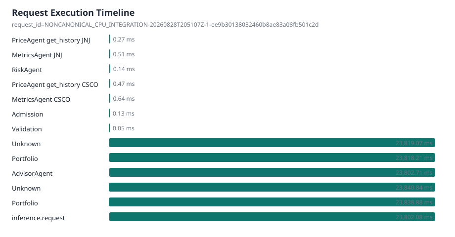
| Observation | Stage | Agent | Tool | Ticker | Wall time | Parent observation |
|---|---|---|---|---|---|---|
| otel:00abfd1e06d275efb61bada2406b373d:e9074f0d15217d9c | price | PriceAgent | get_history | JNJ | 0.27 ms | otel:00abfd1e06d275efb61bada2406b373d:11affd4c96a501c1 |
| otel:00abfd1e06d275efb61bada2406b373d:11affd4c96a501c1 | metrics | MetricsAgent | JNJ | 0.51 ms | otel:00abfd1e06d275efb61bada2406b373d:32cda21ec92ebd1e | |
| otel:00abfd1e06d275efb61bada2406b373d:1d3bdad93a50a5fe | risk | RiskAgent | 0.14 ms | otel:00abfd1e06d275efb61bada2406b373d:32cda21ec92ebd1e | ||
| otel:00abfd1e06d275efb61bada2406b373d:b2ac9e87e90880b6 | price | PriceAgent | get_history | CSCO | 0.47 ms | otel:00abfd1e06d275efb61bada2406b373d:cb5597d0c59cd4b7 |
| otel:00abfd1e06d275efb61bada2406b373d:cb5597d0c59cd4b7 | metrics | MetricsAgent | CSCO | 0.64 ms | otel:00abfd1e06d275efb61bada2406b373d:32cda21ec92ebd1e | |
| otel:00abfd1e06d275efb61bada2406b373d:44cb450f7262b77d | admission | Admission | 0.13 ms | otel:00abfd1e06d275efb61bada2406b373d:87ad571cbb8f7a5d | ||
| otel:00abfd1e06d275efb61bada2406b373d:59808489b7d282fc | validation | Validation | 0.05 ms | otel:00abfd1e06d275efb61bada2406b373d:87ad571cbb8f7a5d | ||
| otel:00abfd1e06d275efb61bada2406b373d:203a1ad01f2a4f45 | unknown | Unknown | 23,819.07 ms | otel:00abfd1e06d275efb61bada2406b373d:87ad571cbb8f7a5d | ||
| otel:00abfd1e06d275efb61bada2406b373d:32cda21ec92ebd1e | portfolio | Portfolio | 23,818.21 ms | otel:00abfd1e06d275efb61bada2406b373d:203a1ad01f2a4f45 | ||
| otel:00abfd1e06d275efb61bada2406b373d:f734a5800b35a4c0 | advisor | AdvisorAgent | 23,802.71 ms | otel:00abfd1e06d275efb61bada2406b373d:32cda21ec92ebd1e | ||
| otel:00abfd1e06d275efb61bada2406b373d:87ad571cbb8f7a5d | unknown | Unknown | 23,840.84 ms | |||
| otel:00abfd1e06d275efb61bada2406b373d:3647850362fcd4d5 | portfolio | Portfolio | 23,838.88 ms | otel:00abfd1e06d275efb61bada2406b373d:87ad571cbb8f7a5d |
Provenance
- Git SHA
- N/A / telemetry unavailable for this run
- Model
- Qwen/Qwen3-0.6B
- Model revision
- N/A / telemetry unavailable for this run
- vLLM version
- 0.8.5
- dtype
- bfloat16
- max model length
- 4096
- max num seqs
- 32
- max batched tokens
- N/A / telemetry unavailable for this run
- Prefix caching
- disabled
- Benchmark concurrency
- 2
- Dataset mode
- sampled_10
- Selected query count
- 10
- Hardware
- {"cpu_count": 14, "gpu": {"driver_supported_cuda_version": null, "driver_version": null, "memory_total_mb": null, "name": null, "toolkit_cuda_version": null}, "hostname": "353b3218ff44", "machine": "x86_64", "platform": "Linux-5.15.153.1-mi
{kind=link}
{kind=link}
{kind=link}
{kind=link}
{kind=link}
{kind=link}
{kind=link}
{kind=link}
{kind=link}
{kind=link}
{kind=link}
{kind=link}